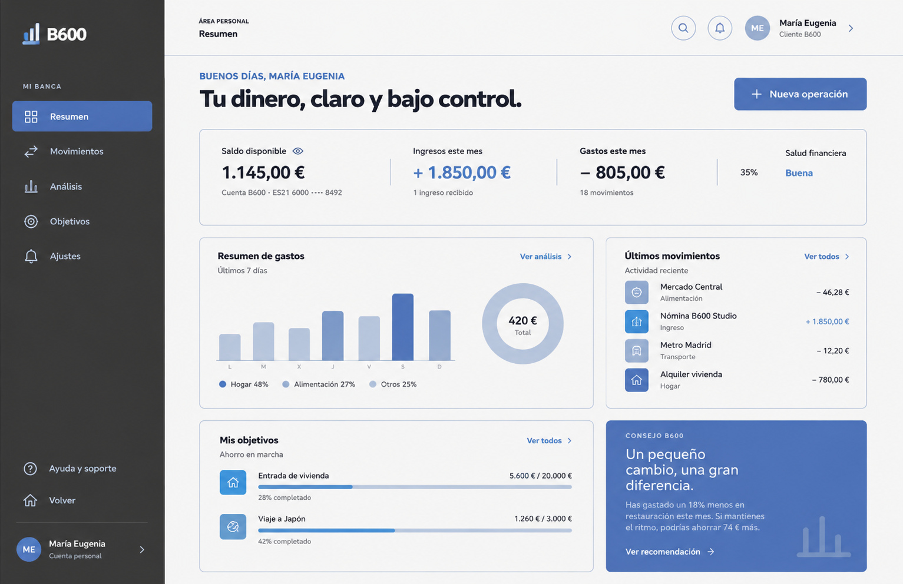

Observar
Revisé el contenido, el objetivo y las páginas de referencia.
PROYECTO 01 · 2025
Una experiencia bancaria más clara para acompañar las decisiones del día a día.
Investigación · Interacción · Datos
Sitio web
Figma Design · Figma make
01 / OBJETIVO
El punto de partida tenía demasiada información al mismo tiempo. El objetivo fue ordenarla, destacar lo esencial y crear un recorrido que cualquier persona pudiera seguir sin instrucciones.
02 / CÓMO LO HICE
Revisé el contenido, el objetivo y las páginas de referencia.
Separé la información por temas y definí un recorrido sencillo.
Preparé el prototipo y revisé la organización de las pantallas.
03 / RESULTADO
Investigación · Interacción · Datos
